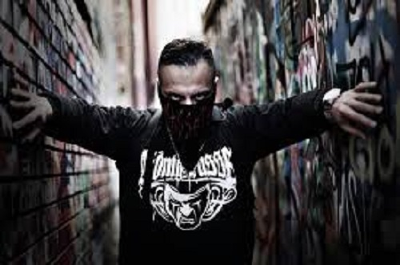

MASSAKA(Murat İlhan)
HAYATI
Hard Rock tarzında yaptığı hip hop müzik ile adından söz ettiren Massaka yani Murat İlhan aslen Trabzon‘ludur. 1984 yılında dünyaya gelen Massaka’nın Burcu Akrep‘tir. Yaşantısını Almanya Kreuzberg, Berlin’de sürdüren Murat İlhan Almanca ve Türkçe rap yapmakta gruptadır. Yaşantılarını müziğe yansıtan Massaka üyeleri ilk olarak Karanlık isimli albümü müzik piyasasına sürmüş ardından ikinci albümleri olan Eşkiya adlı şarkıyı Sansar Salvo ile seslendirmiştir. Özellikle Blutbeton isimli albüm ile ciddi bir çıkış yakalamışlardır. Box ve Wing chu sporları ile ilgilenen Murat İlhan küçük yıllarından bu yana kendisini rap şarkıları ile ifade etmeyi tercih etmiştir. Almanya’nın Berlin Kreuzberg semtinde yaşamaktadır. Monstar gruptan daha sonra ayrılmış Massaka tek başına yoluna devam etmiştir. İlk dönem Murdoc ismini kullanmış ancak Amerika’dan yasal nedenlere ismi kullanamamıştır. Daha sonra Massaka ismini kendi markası olarak kullanaya başlamış günümüzdede Massaka markası ile bandana, kolye ve tişört gibi ürünleride bu marka ile sunmaktadır.

ALBÜMLERİ:
• Blutbeton (Colos ile) (2007)• Dämmerung (2010)
• Das Ritual (2011)
• Blutbeton 2 (Monstar361 ile) (2012)
• İstila (Kodes ile) (2016)
• Siyah (2018)
• Flashback (2018)
• Katliam 3 (2018)
• Syndikat (Monstar361 ile) (2019)
• Undefeated EP (Joe Young ile) (2020)
• Massaka & Joe Young Ft. Snoop Dogg – 3 Kings (2020)
• Katliam 4 (2020)
• Fight Kulüp 2 (Ceza, Killa Hakan, Contra, Anıl Piyancı,Summer Cem, Khontkar ile) (2020)